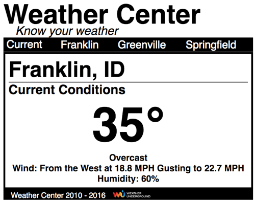

Use PHP for Weather Data
In last week's activity you visited the Weather Underground API documentation, in particular, you were asked to visit two pages:
- Code Samples page - example code for using varying technologies to get weather data
- Geolookup page - examples of requesting data in a variety of ways are shown at the bottom of the page.
Work with Someone
As we have done before, you should complete this activity and the assessment with at least one other person and no more than 4 other people (5 maximum in a group). You will be required to report the name(s) of the person(s) you worked with.
The Task
In this activity you are going to use data from the weather.json file and the PHP code sample from the wunderground API to get the weather data for the respective city pages in the jsonweather folder, downloaded last week.
Outcome
The idea is to retrieve the same information for each of the city pages as you did in last week's assessment for the current location page: city and state names, current temperature, current condition and the other two required pieces of weather data that you chose to include (if you chose more than two, include all of the same ones that you did use last week).
Setup and Test
- Start with one of the weather pages (your choice).
- Create a PHP code block on line 1 "<?php ?>" of the file
- Make sure the doctype declaration is on line 2.
- Within the PHP code block, create some empty lines so you have room to work.
- Go the wunderground code sample page and copy the PHP sample.
- Return to the city page you are working in and paste the example code.
- Remove any extra opening (<?php) or closing (?>) PHP code block tags.
- From the weather.json file select either the name and state, or longitude and latitude values or the zip code and use them in the URL string as needed to make a make a request to the wunderground API as seen in the geolookup examples for whichever option you choose to use.
- Remember to add your own API key to the URL string.
- Add an "exit;" statement on the first empy line after the sample PHP code that you pasted into the weather page so that you can see the result of the PHP request for weather data.
- Save the file.
- Make sure your local server is running and click the "Live Preview" button in Brackets.
- If everything is working, you should now see the line of data on your screen that says, "Current temperature in [city name] is: [temperature value] (with the real name and temperature instead of the text).
- If things worked you are ready for the next step, if not do some troubleshooting until they do work.
- Remove or comment out (use your
Command + /for Mac orControl + /for Windows, or just type "//" to the far left of the line) the lines with echo "Current temperature...." and exit; so that they no longer work.
Data to the Page
- Using the code in the PHP example taken from weather underground as an example, get the rest of the data that you used last week.
- You already have the city name ($location) and the current temperature ($temp_f).
- You will need the state, current condition and the other items you used last week.
- Assign the values to PHP variables ($variable_name), just as exemplified in the example PHP code.
- Once the variables are created and have values assigned to them, you will put them into the page.
- Each variable will have to be placed inside of a PHP code block with an echo and the variable followed by a semi-colon (e.g. <?php echo $temp_f; ?>).
- The various variables will be placed in the following locations:
- The city and state variables (separated by a comma and space) will need to be the first items in the title element.
- These same variable will need to be placed inside the h1 with the id of "cityDisplay".
- The current temperature variable will go into the list item with the id of "currentTemp".
- The current condition variable will go inside the list item with the id of "summary".
- The other weather items that you used last week will go in the same location as you used last week (you will have to add the list items and id's (refer to the index.php page for id names if needed).
- When placed, run the page and make sure everything works, showing all of the weather data in the correct location.
- Add an "id" attribute to the body element on the page that has a value of the city name (e.g. <body id="franklin">).
- In the user_styles.css file write a css rule that will not display the div with an id of "status" if it is on the page with an ancestor with an id equal to what you wrote in item 7 above.
An Example
When you are done, you should see something that resembles the image below (your added data may be different than what is shown).

Repeat
With one city page done, repeat the same process with the other two city pages (NOT the index.php page).
When done, you should be able to click the various navigation links to move between the cities and see the weather data update to reflect that city's weather.
List the Names
When done and all of the city pages are working, add additional list items to the bottom of the "current_conditions" unordered list. Place your name in the first of the additional list items and the names of the others in additional list items. Add these to all of the city pages.